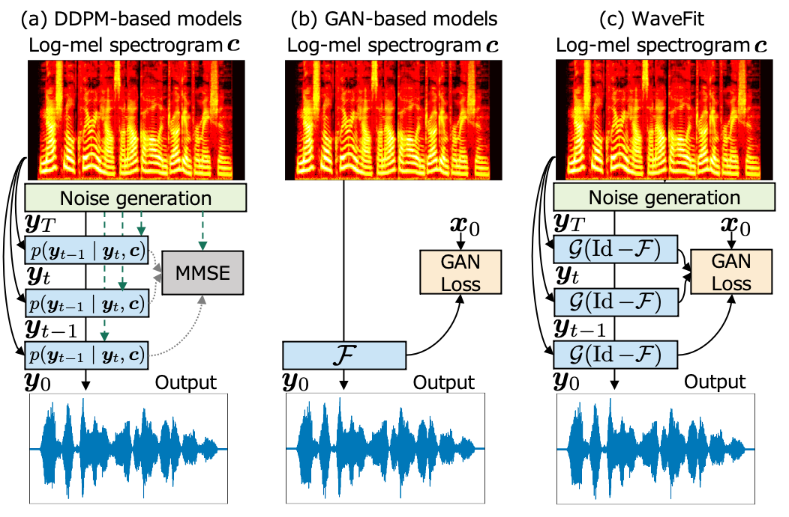
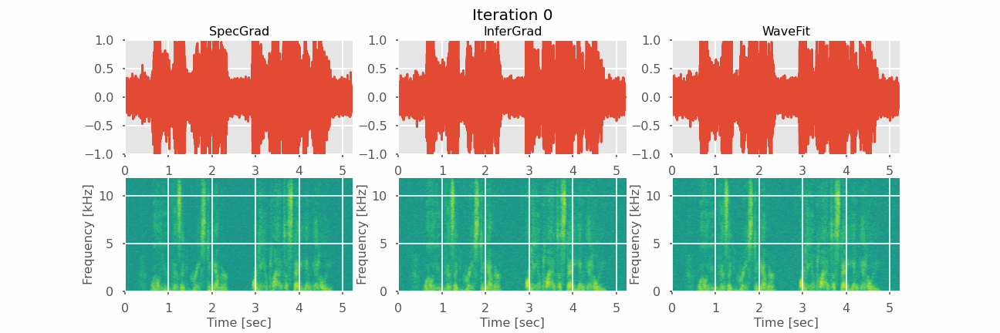

Abstract:Denoising diffusion probabilistic models (DDPMs) and generative adversarial networks (GANs) are popular generative models for neural vocoders. DDPMs and GANs can be characterized by the iterative denoising framework and adversarial training, respectively. In this study, we propose a fast and high-quality neural vocoder called WaveFit which integrates the essence of GANs into a DDPM-like iterative framework based on fixed-point iteration. WaveFit iteratively denoises an input signal, and trains a deep neural network (DNN) for minimizing an adversarial loss calculated from intermediate outputs of all iterations. Subjective (side-by-side) listening tests showed no statistically significant differences in naturalness between human natural speech and those synthesized by WaveFit (at the 5th iteration). Furthermore, the inference speed of WaveFit was more than 240 times faster than WaveRNN.

Contents:
Comparison animation of SpecGrad, InferGrad, and WaveFit's waveform generation in 5 refinement iterations
Intermediate outputs examples of a WaveFit-5 model
Comparison with DDPM-based models and WaveRNN
Comparison with GAN-based models on LibriTTS
Comparison animation of SpecGrad [1], InferGrad [2], and WaveFit's waveform generation in 5 refinement iterations:
Note: These three neural vocoders have the same network architecture with the same model size, and were trained on the same dataset. 
| SpecGrad [1] |
InferGrad [2] |
WaveFit |
|
| Iteration 1 | |||
| Iteration 2 | |||
| Iteration 3 | |||
| Iteration 4 | |||
| Final output |
Intermediate outputs examples of a WaveFit-5 model:
| Example 1 |
Example 2 |
Example 3 |
Example 4 |
|
| Ground-truth | ||||
| Iteration 1 | ||||
| Iteration 2 | ||||
| Iteration 3 | ||||
| Iteration 4 | ||||
| Final output |
Comparison with DDPM-based models and WaveRNN:
| Example 1 |
Example 2 |
Example 3 |
Example 4 |
|
| Ground-truth | ||||
| WaveRNN [3] | ||||
| SpecGrad-3 [1] | ||||
| InferGrad-3 [2] | ||||
| WaveFit-3 | ||||
| WaveFit-5 |
Comparison with GAN-based models on LibriTTS:
Note1: Output samples of MB-MelGAN [4] and HiFi-GAN [5] were downloaded from Dr. Tomoki Hayashi's unofficial implementations.
Note2: The list of sample ids used in the subjective test on the LibriTTS dataset [6] is
here
.
| Example 1 (1089_134686_000007_000004) |
Example 2 (1089_134686_000012_000000) |
Example 3 (121_127105_000044_000003) |
Example 4 (1284_1180_000024_000001) |
|
| Ground-truth | ||||
| MB-MelGAN [4] | ||||
| HiFi-GAN [5] | ||||
| WaveFit-5 |
References:
[1] Y. Koizumi, H. Zen, K. Yatabe, N. Chen, and M. Bacchiani, “SpecGrad: Diffusion Probabilistic Model based Neural Vocoder with Adaptive Noise Spectral Shaping,” in Proc. Interspeech, 2022. [paper]
[2] Z. Chen, X. Tan, K. Wang, S. Pan, D. Mandic, L. He, and S. Zhao, “InferGrad: Improving Diffusion Models for Vocoder by Considering Inference in Training,” in Proc. ICASSP, 2022. [paper]
[3] N. Kalchbrenner, W. Elsen, K. Simonyan, S. Noury, N. Casagrande, W. Lockhart, F. Stimberg, A. van den Oord, S. Dieleman, and K. Kavukcuoglu, "Efficient Neural Audio Synthesis," in Proc. ICML, 2018. [paper]
[4] G. Yang, S. Yang, K. Liu, P. Fang, W. Chen, and L. Xie, "Multi-band MelGAN: Faster Waveform Generation for High-Quality Text-to-Speech," in Proc. SLT, 2021. [paper]
[5] J. Kong, J. Kim, and J. Bae, "HiFi-GAN: Generative Adversarial Networks for Efficient and High Fidelity Speech Synthesis," in Proc. NeurIPS, 2020. [paper]
[6] H. Zen, V. Dang, R. Clark, Y. Zhang, R. J. Weiss, Y. Jia, Z. Chen, and Y. Wu, "LibriTTS: A Corpus Derived from LibriSpeech for Text-to-Speech," in Proc. Interspeech, 2019. [paper]